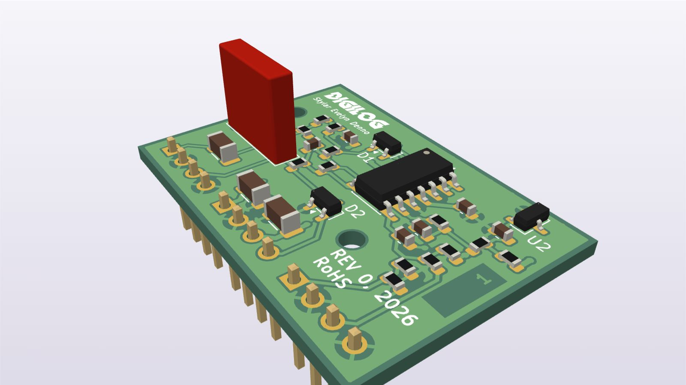
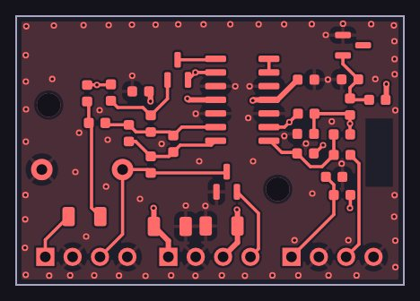
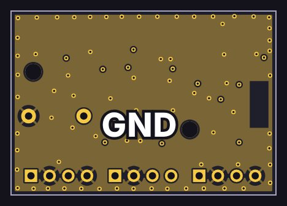
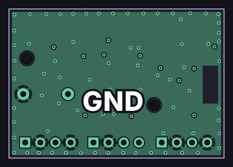
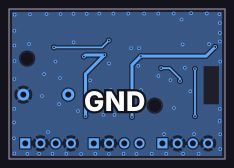
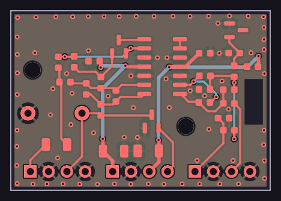

Comp card

How it works
A simplified schematic: just the signal path, with the details left out. Dashed lines are control voltages from the console’s controller.
Design notes
- The compression decisions live in firmware. The card only measures the level and applies the gain.
- Measuring: a full-wave rectifier (OPA4197 and BAV99 diodes) makes a fast envelope for the STM32’s ADC, behind an 8 kHz anti-alias filter. Threshold, ratio, attack, release and peak or RMS detection are all in firmware.
- Applying: the STM32’s DAC sets the gain through a CV scaler with an ADR5041 reference, which drives the E− pins of both output-card VCAs.
- It listens after the EQ and before the fader, so moving the fader never changes how hard it compresses.
- Stereo-linked: both sides get the same control voltage, so the image doesn’t shift.
- Fail-safe: 0 V from the DAC (in reset or off) means −44 dB, so a fault turns the channel down, never up.
- Gain range −44 to +25 dB; the firmware uses −40 to +20 dB.
The copper layers
All 4 copper layers of the board, top to bottom, drawn from the KiCad layout: 2 signal layers and 2 ground planes, labeled GND.
-

Top F.Cu
Signal layer: parts, signal traces and +15 V, +3.3 V, −15 V, −2.5 V power traces
-

Inner 1 In1.Cu
Ground plane (GND)
-

Inner 2 In2.Cu
Ground plane (GND)
-

Bottom B.Cu
Signal layer: signal traces and +15 V, −15 V power traces
-

All layers
Every copper layer stacked, top on top
See schematics